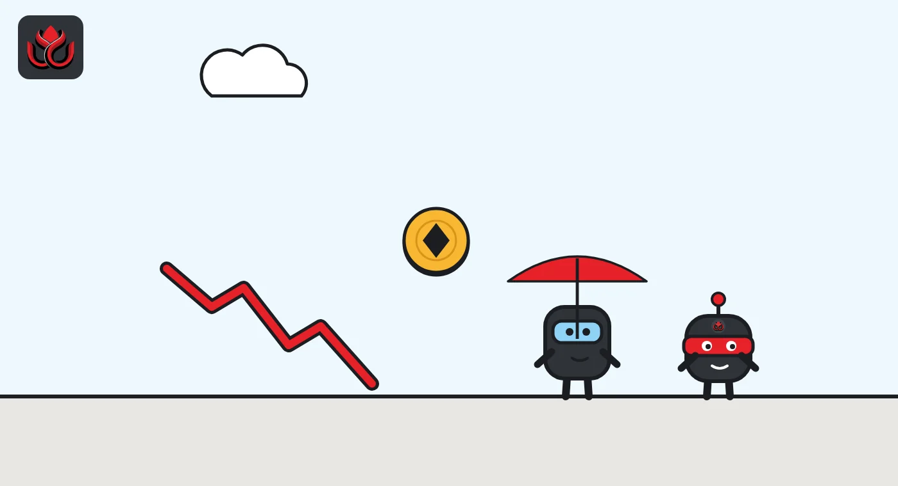

Ether ETFs lost a record $1.61 billion in October, wiping out all of 2026's inflows
US spot ether funds had their worst month since launch, beating November 2025's record outflow. October erased August and September's gains and left the funds slightly negative for the year, while ETH slid to about $2,270.
Key points
- Investors pulled a net $1,607.2 million from US spot ether ETFs in October 2026, the biggest monthly outflow since launch, per Farside data.
- That beat November 2025's $1,423.6 million record and left ether funds about $31 million negative for 2026.
- Ether funds lost about three times as much as bitcoin funds in October, and ETH fell about 8% from its October 21 close.
What DeepSea's data shows
Futures traders swung far more sharply than ETF investors. DeepSea's weekly report shows the traders it tracks cut their net long exposure to ether by $837.43 million in the week ended October 11, and by another $605.31 million in the week ended October 18. That left them net short ETH, with $296.83 million of longs against $672.71 million of shorts.
By November 2 the same tracker showed the opposite. DeepSea's live long/short page listed $1.12 billion of ETH longs against $74.86 million of shorts, though ETH positioning had a net change of minus $33.39 million, the second-largest move after BTC. The live page does not name an exchange; DeepSea's weekly reports say its perps data covers open Hyperliquid positions held by the traders it tracks, so the figures are probably from the same source but from different dates.
Data: DeepSea (desea.io), checked November 1, 2026, 11:09 p.m. ET.
A record month of selling
Investors pulled a net $1,607.2 million out of US spot ether exchange-traded funds (ETFs) in October 2026, the most in any month since they launched in July 2024, according to daily figures compiled by Farside Investors. Only three of the month's 22 trading days showed net inflows, and all three were small.
The previous record was November 2025, when net outflows reached $1,423.6 million on the same data.
The pace picked up at the end. By October 26, outflows for the month stood at $1,264.4 million. The last four trading days added another $342.8 million, including $155.7 million on Friday, October 30. Only October 6 ($201.9 million) and October 7 ($160.9 million) were worse.
A net flow is the money that enters a fund through new shares minus the money that leaves through redemptions. When investors sell ETF shares on balance, the issuer redeems shares and the fund holds less ether, so steady outflows mean real selling of the underlying asset by these products.
Ether versus bitcoin
Bitcoin funds had a much milder month. US spot bitcoin ETFs lost a net $515.9 million in October, Farside's bitcoin table shows. By that measure ether funds lost about three times as much as bitcoin funds, even though the bitcoin products are far larger.
The daily pattern also differed. Bitcoin funds had several big inflow days, including $526.7 million on October 19 and $524.8 million on October 21. Ether funds never took in more than $24.8 million in a day all month.
Both groups had a sharp day on October 22. Ether funds lost $110.6 million and bitcoin funds $635.6 million. Bitcoin funds then had their largest outflow of the month, $643.2 million, on October 30, the same day ether funds lost $155.7 million.
October against recent months
The chart compares October with the previous record month and the two inflow months before it. Net flows across US spot ether funds tracked by Farside, in millions of US dollars.
The swing is large. August and September together brought in about $2.68 billion. October took back $1.61 billion of that in a single month.
US spot ether ETF net flows by month
US$ million
Source: Farside Investors, monthly sums of daily flows, accessed November 2, 2026
What ETH did
Ether fell alongside the outflows. On CoinGecko's daily data, ETH closed at $2,472.68 on October 21, its highest close since at least October 14. It dropped to $2,386.48 on October 22, the day of the broad sell-off, and closed below $2,400 on every day after that.
The slide steepened at month end. ETH closed at $2,357.47 on October 28 and $2,249.48 on October 29, then at $2,242.50 on October 30. It ended November 1 at $2,273.92. That is a fall of about 8% from the October 21 close.
Trading activity jumped as prices fell. CoinGecko recorded about $18.8 billion of ETH volume on October 30 and $19.5 billion on October 31, roughly double the levels of the previous week. Ether's market value stood near $278 billion on November 2.

The year so far
October's outflows changed the picture for the whole year. Summing Farside's daily data, US spot ether ETFs are now at a net outflow of about $31 million for 2026. Before October they had been up by roughly $1.58 billion for the year, thanks mostly to strong inflows in August and September.
Spot bitcoin ETFs are still positive for 2026, with about $454 million of net inflows on the same basis. That is despite their own heavy outflows in May and June.
Ether funds have now had net outflows in six of the 10 months of 2026. The only inflow months were April, July, August and September.
Timeline
Spot ether ETFs lose $1,423.6 million, then a record
Spot ether ETFs take in $1,851.5 million
Spot ether ETFs take in $831.3 million
Largest daily outflow of October, $201.9 million
Ether ETFs lose $110.6 million; ETH closes at $2,386.48
October outflows reach $1,264.4 million
Another $155.7 million out; October total reaches a record $1,607.2 million
LC Insight analysis
This section is our reading of the facts above, not a statement of fact.
- We think ether's outflows, three times bitcoin's, point to a rotation inside crypto portfolios, not just a general retreat. Institutions appear to be cutting the more volatile asset first.
- The missing inflow day is the striking detail. Bitcoin funds saw buyers return several times in October; ether funds never took in more than $24.8 million in a day. Demand looks thinner, not just paused.
- With 2026 inflows gone, ETH will likely trade on its own on-chain demand rather than ETF flows for a while. A run of steady inflow days would be the first sign institutions are coming back.
What's next
- Whether ether ETF outflows continue into November
- ETH daily closes relative to the $2,250 area of late October
- Bitcoin ETF flows after the October 30 outflow
- Any change in fees or product lineup by ether ETF issuers
Disclaimer. This article is based on public information and the sources listed below as of the update time shown. It is for information only and is not investment, legal or tax advice. Figures may change as companies and authorities publish new data.